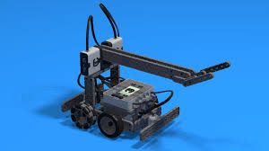

Meet RouteX!
RouteX is a sleek, autonomous pathfinding robot engineered with one core mission: to find the most efficient route from point A to point B. Equipped with UltraSonic Sensors, real-time mapping algorithms, and adaptive learning capabilities, RouteX navigates complex environments with precision and speed. RouteX analyzes obstacles, evaluates alternate paths, and makes split-second decisions to ensure optimal navigation.
Learn More